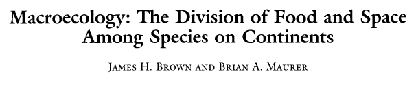

Macroecology

Science,1989
- Patterns of biodiversity not explained by small scale experiments
- “Study of ecological patterns and processes that characterize the assembly of continental biotas”
- North American mammals and birds
Macroecology
Brown & Maurer, 1989. Science
Macroecology
How multiple samples can help us to understand large scale patterns.
- Patterns (mainly descriptive)
- Processes and mechanisms
Macroecology
Humboldt, 1807. The Geography of Plants
Macroecology
Morueta-Holme et al., 2015. PNAS
Broad scale patterns of biodiversity
Taken from Maura 2017
Broad scale patterns of biodiversity
- Plot
- Transect
- Region
- Continent
- Globe
Broad scale patterns of biodiversity
- Individual
- Species
- Population
- Assemblage
- Community
Broad scale patterns of biodiversity
- Day
- Month
- Year
- Century
- Geological time
Questions in macroecology
Taken from Maura 2017
Traditional Ecology
Taken from Maura 2017
Questions in macroecology

Taken from Maura 2017
Questions in macroevolution
Sansom et al., 2014. Proc. R. Soc. B
Macroevolution
Large scale approach at any level (taxonomic, spatial, temporal), not all levels

Macroecology
- High-resolution datasets (geographic records)
- List of species
- Molecular information (large molecular phylogenies)
- Computational power
- New analytical approaches
Data-intensive science
Page, 2013
Taxonomic names
Page, 2013
Geographic records

Global Ecology and Biogeography
Broad-scale patterns of biodiversity
- Diversity gradients
- Range size
- Body size
- Biogeography
- Anthropocene
Global Ecology and Biogeography
- Data wrangling
- Data analysis and statistics
- Visualizations
- Spatial analysis